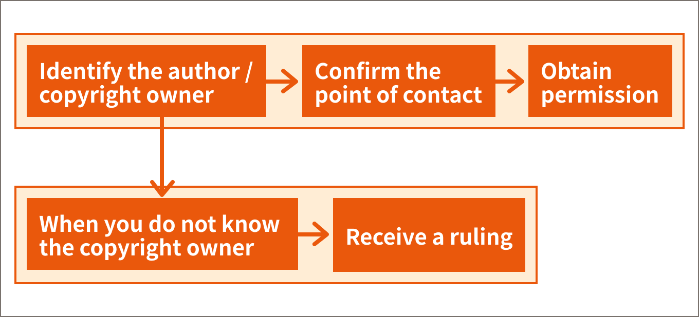

Steps for obtaining permission
We showed you the flow chart in "Chapter 2, Section 01, Classes and Copyrighted Works". Let's review the contents again.
When it comes to "obtaining permission or giving up", you can either: (a) remove the third-party's copyrighted work or (b) find a replacement.
The following is an explanation when you select "Obtaining Permission".
Step 1: Find out who the author/copyright owner is

If you use several sources in a single material, it is advisable to prepare a list of sources for each material.

Also, if you reproduce a work from a website, please be careful to ensure that it is not a secondhand citation of the work.

In that case, you have to look at the original site to see who the author or copyright owner is and if there is any indication of the licensor.

Step 2: Find out if there is any contact information
Many copyright owners offer contact information for licenses.
First, check the CRIC, Copyright System in Japan page to see if there is any contact information.
For example, music copyrights are often managed by a management society, JASRAC or NexTone, but sometimes they are not.
So, first, let's search JASRAC's database to see if there are any songs you want to use. If you can't find the music you are looking for through JASRAC, check NexTone's database.
For example, a search of the Official Hige Dandism music in the database reveals that it is managed by NexTone rather than JASRAC. In this case, you need to apply to NexTone for permission.
Step 3: Make a permission request
If there is a point of contact, apply for a license through the point of contact. Many points of contact are web forms. Check the fees, as there may be fees involved; JASRAC and NexTone offer fee calculation simulations.
If a calculation simulation is not available, read the Rental Fee Rules and Regulations or obtain an estimate.
If there is no point of contact, contact the author or copyright owner directly to obtain permission [Flow of Permission].

To avoid any misunderstanding with the copyright owner, you should communicate in writing and on record. At a minimum, the following information should be included:
- Works to be used.
- Users.
- Purpose of use (Specify).
-
How to use (be specific)
e.g.: At a cultural festival with an audience of about 100 people, we do not charge an admission fee, but we pay a fee to the guest actors. We would like to use a script we created based on your novel. - Term.
- Scope of use: is it all of the work or just a part of it?
- Compensation: if a fee is charged, the amount and method of payment.
For educational use, the fee may be low or free, so we recommend that you inquire anyway.
Step 4: If you do not know the copyright owner
Even if you have tried to find out who the copyright owner is you still might not be able to figure out who the actual copyright owner is.
The Copyright Act provides for the use of copyrighted works with a compulsory license by the Commissioner of the Agency for Cultural Affairs and payment of compensation (the compulsory license system if the copyright owner is unknown) (Article 67). The same adjudication system applies to cases if the owner of neighboring rights is unknown.
Copyrighted works whose copyright owners are unknown are called "orphan works." The Orphan Works Demonstration Project Executive Committee, consisting of rights owners' organizations, etc., has published a "Guide for Preparation of Application Forms for Ruling on Works of Unknown Copyright owners, etc." Please refer to this guide.
To apply, compensation is required in addition to the cost of advertising for the right owner's search (usually 8,250 yen) and the adjudication application fee (usually 6,900 yen). For the amount of compensation, please refer to the Agency for Cultural Affairs' simulation system for the amount of compensation for adjudication.